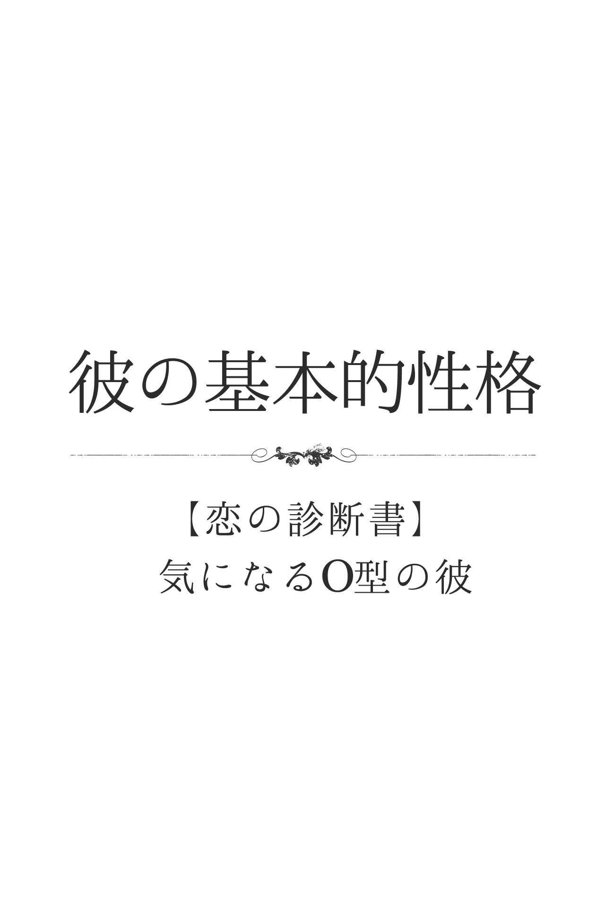
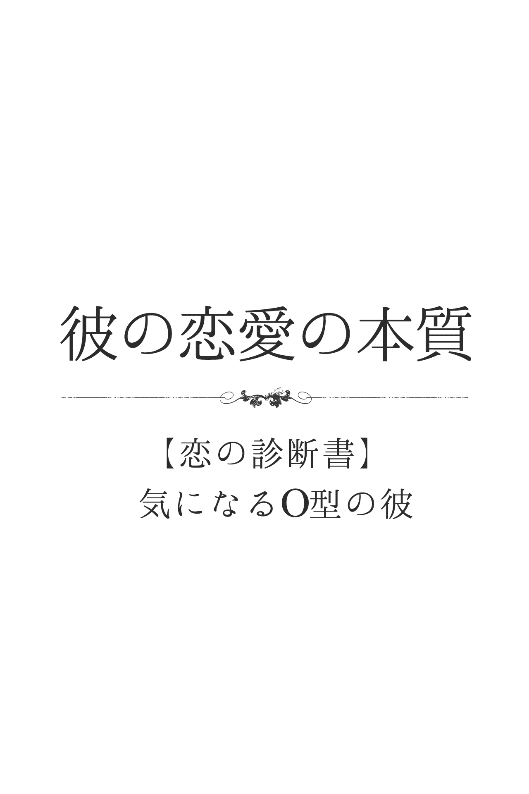
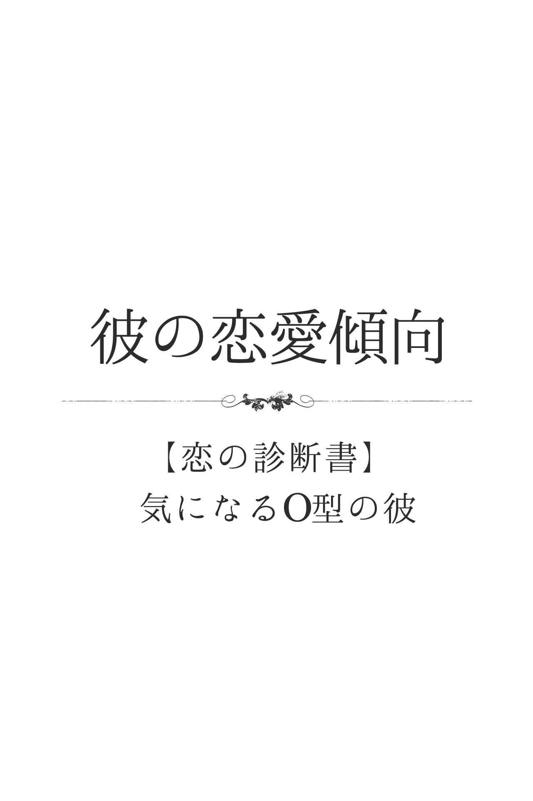
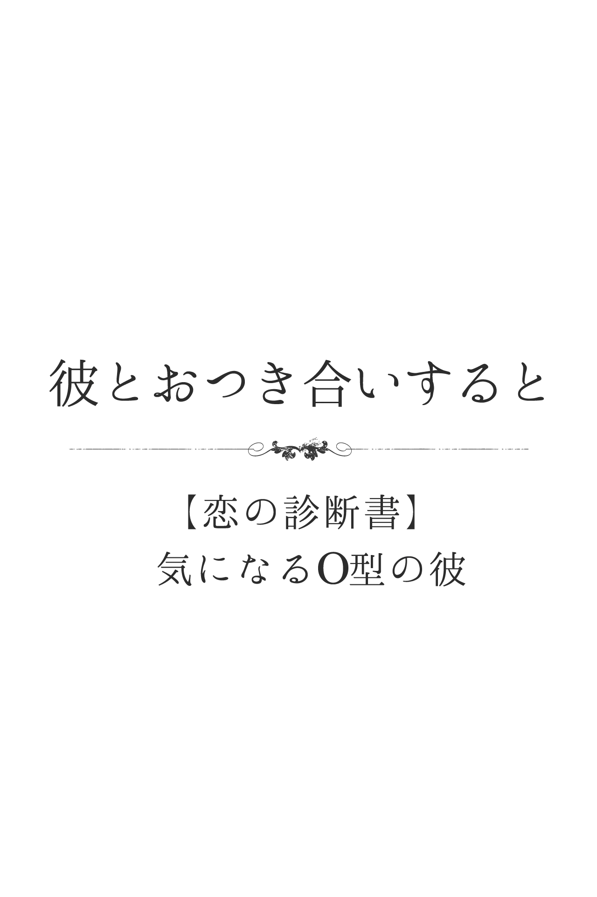
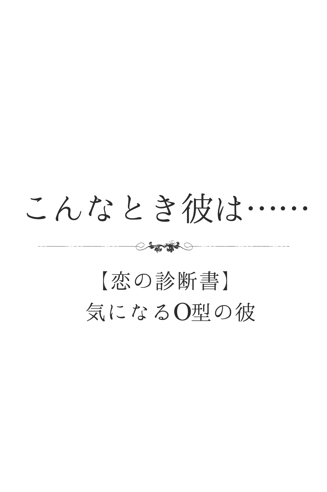
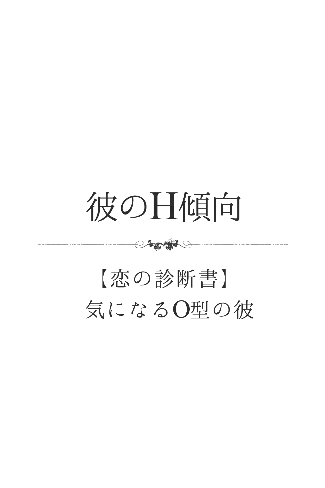
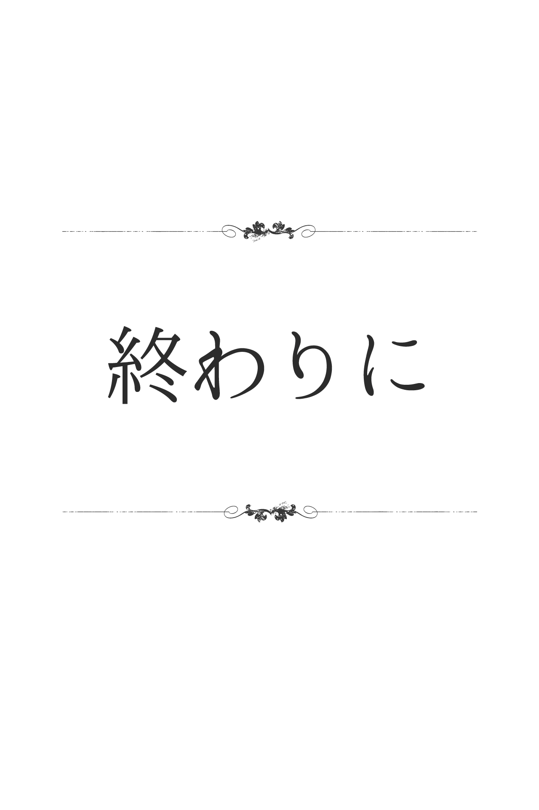
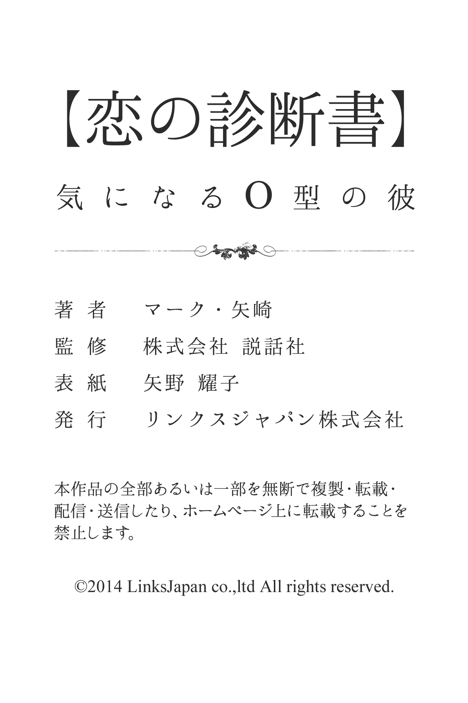

| 【恋の診断書】気になるＯ型の彼 (得トク文庫) | |
| マーク・矢崎 | |
| (2015) | |

1 、はじめに
世の中には、たくさんの占いや診断があります。中でも「血液型診断」は、合コンや飲み会、仕事場や友だち同士の間でも、事あるごとに話題に上るのではないでしょうか。その人の何気ないひと言や行動から「あーＢ型っぽい！」「やっぱり、Ａ型だからねー」なんて口にしたことが、あなた自身、何回かあるのでは？ あなたが好きな男性、あるいは彼氏は何型ですか？ すでに、今の段階で性格と血液型を照らし合わせて、相手のことを何となく判断しているかもしれませんね。恋を上手に進展させていくためには、やはり相手をよく理解し、それに合ったアクションを起こしていくことが大切です。そのひとつの目安やヒントとして「血液型診断」を活用するのは、とても有効的だと思います。この本には、基本的な性格はもちろん、さまざまなシチュエーションを想定した診断を詰め込んでおきました。その中には、きっとあなたが知りたかった項目があるはずです。あなた自身が楽しみながら、そして、ふたりの恋がよりハッピーな展開を迎えられるために、この本が少しでもお役に立てたら幸いです。
2 、彼の基本的性格
彼って、いったいどんな人？
リーダーシップに富んでいて、頼りがいのある彼。おおらかで面倒見が良く、楽しいことが大好きなので、どこに身をおいても多くの人から慕われます。悩んでいる人がいれば、なぐさめの言葉をかけるだけでなく、一緒になって悩み、どうしたら解消できるのか一生懸命に考えてくれるでしょう。特に、男女を問わず自分が気に入った相手には、好意を前面に出して接していきます。ただ、時には度を越して干渉しすぎたり、良かれと思ってお説教したりすることも......。
彼は、自意識過剰なタイプ？
彼は、自意識過剰といえるでしょう。もともと、人から注目されることが大好きなＯ型。決して派手なファッションをしたり、アクションを起こしたりはしませんが、自分の感性やセンスに自信をもっています。そのため、持ち物や髪形にこだわったり、本物志向でもあるので、意外に高級品を身につけていたりするはず。自分では「どうだ、スゴイだろう」「わかる人にだけわかればいい」と思っていますが、本人が思うほど周りは気づいていないことが多いでしょう。
彼は、第一印象で損するほう？
彼が第一印象で損することは、あまりないでしょう。おおらかで物腰が柔らかく、きちんと礼儀をわきまえているＯ型。言葉づかいもていねいですし、根がおしゃべり好きなので、上手に会話を弾ませることができます。また、世話好きでもありますから、初対面から相手への気づかいを忘れず、ごく自然に居心地の良さを演出できるはず。ただし、気合いが入っている場合は、妙に格好をつけたがる部分が表に出てしまい、相手を引かせてしまうことも......。
彼は、甘え上手？
リーダー気質がある彼は、めったなことで人に甘えることはありません。周囲に対して、常に「頼りがいある存在」でいたいと思っているので、自分から何かを頼むことなど口が裂けても言えないのです。むしろ、人から甘えられたり、頼み事をされたりすることを望んでいます。ただし、心を許した相手にだけは、本心を見せることはありそう。ハッキリと言葉には表しませんが、浮かない表情やモジモジした態度で、相手から「どうしたの？」と声をかけられることを期待するでしょう。
彼は、社交性が高いほう？
おおらかでやさしく、気さくな雰囲気を醸し出す彼。人と接するときは笑顔を絶やさず、上手に会話を転がしていきます。もともと、楽しく明るい話題が好きで、面倒見が良く、サービス精神も旺盛ですから、当然のように相手を楽しませ、喜ばすことができるでしょう。また、リーダーの素養も兼ね備えていますから、相手をエスコートするのも上手。相手に気をつかわせることなく、ごく自然に「おもてなし」ができるのは、まさにＯ型のなせる業でしょう。
彼は、新しいもの好きなタイプ？
物事に対するこだわりが強く、安定を好む彼。本物志向であり、しかも所有欲が強いので、一度手に入れたものをとても大切にします。自分が本当に欲しいものだけを購入したり集めたりするため、あまり新しいものには興味や関心を示さないようです。むしろ、世間で流行していたり、周囲からすすめられたりするものには、難色を示すことのほうが多いかも。とはいえ、それが新製品でも高価なものでも、自分が欲しいと思えば是が非でも手に入れるでしょう。
彼は、プライドが高いほう？
明るく外向的な彼。自分の気持ちを素直に表現できるタイプです。心に思い浮かんだことをストレートに口にし、思いきって行動に移すことができるので、一見オープンで、おおらかで、プライドの高さを感じさせない人に見えるでしょう。しかし、その本質は、意外にもこだわり派といえ、客観的な一面をもっています。しかも、もともとモテたい願望や頼られたい願望が強いので、周りから相手にされなかったりすると、突然機嫌が悪くなることが少なくありません。
彼は、人と自分を比較して落胆しやすいタイプ？
彼は、人と自分を比較して、自己嫌悪に陥ることがあるでしょう。とても面倒見が良く、世話好きなＯ型ですが、少々不器用なところがあります。何事も大ざっぱになりがちで、時にはお節介やありがた迷惑になってしまうこともあり、その横で上手に物事をこなしている人を見ると、かなり落ち込んでしまうようです。もともとリーダーシップがあり、仕切りたがる傾向があるＯ型ゆえに、自分より手際よくスマートな身のこなしのできる人に、劣等感すら抱くことも......。
彼は単純？複雑？
おおらかで開けっぴろげな彼。見るからに単純なタイプです。周囲が自分と一緒に楽しんでくれたり、頑張ってくれたりすれば、ご機嫌になります。しかし、周囲の賛同が得られないと、とたんに不機嫌になってしまうでしょう。これは恋愛のシーンにおいても同様で、気になる女性が自分を受け入れてくれれば、天に昇るような幸せな心地になるはず。でも、愛が受け入れられないとションボリと落ち込んでしまいます。雨に打たれて、濡れそぼった子犬のように元気がなくなってしまうのが彼なのです。
彼は積極的？それとも不器用な男？
常に自分がリーダーになっていないと気が済まない彼。恋愛のシーンにおいても、自分がグイグイ引っ張っていきたがるタイプで、まさに積極的な男性の代表といえるでしょう。デートするにしても、すべてお膳立てしてくれて、もちろんデート費用もすべてもってくれる、なかなか太っ腹の男性です。楽しいことが大好きなので、あなたの誕生日などのイベントも大いに盛り上げてくれるでしょう。ただし、なかなか嫉妬深いところもあるので、彼と交際する以上、自由な時間を満喫することはできなくなってしまうかもしれません。
彼は直球派？変化球派？
彼は自分の気持ちをオープンに表すタイプ。好きな人ができれば、口に出さなくても、すぐにわかります。なぜなら、ひとりでニヤニヤしてみたり、魂を抜かれたみたいになって、一日中その女性の姿ばかりを追っていたりするからです。そして、恋に落ちた当初の恍惚状態から覚めれば、積極的にアプローチを開始するでしょう。基本的に、ストレートなアプローチを好むので、直球派といえます。しかし、たまには変化球を投げて、ムードを高めてみる茶目っ気ももっているのが彼。サプライズなプレゼントを贈って、彼女を喜ばせたりするでしょう。
彼は、ウラオモテがある人？
おおらかで屈託のない人柄の持ち主が彼。そんな彼の場合、ウラオモテはまったくありません。ひたすら、オモテだけだと思って間違いないでしょう。ただし、ウラのない男は格好悪いと、彼自身は思っている様子。たまには落ち込んで見せたり、クールを装ったりしてこそ、魅力的な男になれるのだと信じているようです。そのため、今日の彼は妙に素直じゃないなとか、気取っているなと感じることはあるかも。そんなときは、彼の演技に何気なくつき合ってあげると、きっと満足するでしょう。
彼に秘められた性格的な長所とウィークポイント
彼は親分肌で、リーダーシップに富むタイプです。面倒見が良く、周囲からも慕われているでしょう。自分が好意を感じる人のためには、いろいろやってあげたいと頑張ってしまいます。とはいえ、ついつい干渉しすぎたり、相手のためだからとお説教してしまったりする点は、ウィークポイント。よけいなお世話と思われるだけでしょう。ただし、隠れた長所もあります。それは共感するのが上手なところです。悩んでいる人がいれば、なぐさめの言葉をかけるだけでなく、一緒になって悩んで、どんなふうにしたら解消できるのか一生懸命に考えてくれるでしょう。やさしいハートの持ち主なのです。
彼の喜怒哀楽
彼は喜怒哀楽が激しく、しかも、その感情なり、気持ちなりをストレートに表すタイプです。うれしければ手を叩いて大喜びして、悲しければ涙をこらえようとするでしょう。怒りに顔をゆがめることもあります。そんな素直な彼ですから、かなりわかりやすい人といえます。同時に、周囲にも自分と同じような感情を共有してもらいたい、という願望を強くもっているようです。自分ひとりだけが大はしゃぎして楽しんでいても、何だかつまらないなーと考えてしまう彼。そんなときは、周囲に自分の半分でいいから、はしゃぐことを強要するでしょう。
ジキルとハイド、彼の二面性は？
彼は感情のアップダウンが激しいタイプです。幸せだと感じれば天にも昇りそうな顔をし、怒りにかられると手がつけられないほど怒りまくったりします。そのあまりの激しさは、ジキルとハイドのような二面性に見えることもあるでしょう。しかし、本来は感情の表し方が極端なだけで、二面性があるというのとは少し違います。とはいえ、あまりの喜怒哀楽の激しさに、周りはついていけないものを感じることもありそう。そんなときは放っておくのが一番でしょう。彼の良いところは、いったん感情が爆発してしまえば、それで終わる点にあります。いつまでも同じ感情を引きずることはないようです。
彼が傷つくひと言は？
彼が傷つくひと言は「一緒にいても楽しくない」と言われることでしょう。というのも、彼は朗らかで社交的なタイプ。皆で楽しく騒ぐのが大好きで、面白い話題で場を盛り上げたりと、いろいろサービスすることが大好きで、周囲からも楽しい人だと評価を得ていると自認しているのです。そんな彼ですから「一緒にいても面白くない」と言われることほど、ショックなことはないでしょう。特に、そう告げたのが、交際している相手だったり好きな異性だったりすれば、立ち直れないかもしれません。
彼が喜ぶほめ言葉は？
彼が喜ぶほめ言葉があるとすれば「気前のいい人だね」という言葉です。彼は自分がリーダーになって、皆を引っ張っていくことに喜びを感じるタイプ。しかも、とても世話好きで親切です。そんな彼にとって、最高のほめ言葉とは「気前のいい人だね」といった言葉でしょう。気前がいいという言葉には、おごってくれるというだけでなく、人に対しておおらかな態度がとれるという、器の大きな人間というニュアンスも含まれています。自分がそんな大きな心の持ち主だと言われることほど、彼にとってうれしいことはないのです。
３ 、彼の恋愛の本質
彼の恋愛思考回路
情熱のかたまりの彼。ただ、その愛情の方向性には、個人差が出やすいでしょう。ひとりの女性を誠心誠意愛し抜くこともあれば、拡散して、質より量になったりもします。前者の場合は、周囲が感心するほどの献身を示すでしょう。後者の場合は、身近な人に呆れられるほどの遊び人になるようです。いずれも愛情は深く、目の前にいる女性に対してベストを尽くそうとします。また、恋＝セックスという図式があり、好きになったら口説きまくる傾向が。恋愛至上主義で「愛のために死ねる」と考えているようです。
彼の愛のカタチ
明るく朗らかで、情熱的な彼。好きな人ができると、愛する人に出会えた喜びを全身全霊で表し、情熱をもってアプローチしていくタイプです。自分の愛情を隠さないので、彼が誰を愛しているかは一目瞭然でしょう。もちろん、自分の愛が受け入れられたときの喜びようも、並大抵ではありません。まるで全宇宙を手に入れたような幸せに浸ってしまうはず。そんな彼を見ているだけで、周囲も幸せな気分になれるでしょう。愛する女性に対しては、男らしくリードしたいと頑張ってしまう、なかなか甲斐性のあるタイプといえそう。
彼が、恋人を選ぶときの３大条件
彼が恋人を選ぶときの条件の第一は、元気いっぱいの女性であること。彼自身がパワフルなタイプなので、自分と同じように行動的な女性なら、つき合って楽しいし一緒にいろんな体験を共有できると思っています。
第二の条件には、隠し事をしない女性が理想です。彼は、あっけらかんとしたタイプなだけに、相手の気持ちを察するのは苦手で、秘密を抱えているようなタイプの女性はパスしたのでしょう。
第三の条件としては、やさしい女性。自分が落ち込んだり窮地に陥ったりしたとき、やさしさを発揮してくれたら最高だと思っています。
彼は、ロマンチスト？
表面的には、やさしくおおらかな印象を与える彼。一見、その風貌から、さぞロマンチストかと思いきや、実はかなりの現実派なのです。特に、世の中で言われるUFO や不思議な現象などは「そんなことあるわけがない」と信じようとしません。何かにつけ「あれはこうだから、こうなんだ」といった結論を口にしたがります。とはいえ、好きな相手との甘い雰囲気やロマンチックなムードは大好き。ただし、その裏にはいろいろな打算が渦巻いていそうです。
彼は、女性に本音を言わないほう？
彼は、異性に対して本音を言わないことが多いでしょう。基本的に、おおらかでやさしいＯ型は、異性に対してサービス精神が旺盛です。相手に何か頼まれれば、よほどのことがない限り断ることはありません。ただし、それは相手に好かれたいからであり、常に自分が「いい人」でいたい気持ちの表れ。そのため、異性に常識的な見解や、模範的な意見を口にすることが多いでしょう。異性に敬遠されるような本音は、嫌われてもいい相手以外にはしないのです。
彼は、女友だちを「オンナ」として意識している？
モテたい願望の強いＯ型は、生理的に受けつけないタイプ以外、女友だちを「オンナ」として見るでしょう。友だちであろうと女性は女性であり、常に「オンナ」として意識しています。もともと面食いなところがあり、特に顔やスタイルのいい女友だちに対しては、人知れずエッチな目で観察し、鋭いチェックを入れていくでしょう。また、女性からやさしくされることに弱いので、好意的に接してくれる女友だちを、いつの間にか好きになっていることもあるようです。
彼は、好きな相手に冷たくしてしまうタイプ？
おおらかで面倒見のいい彼は、穏やかな雰囲気を好みますから、めったなことで好きな人に冷たくすることはないでしょう。細かいことにこだわらず、物事をさらっと受け流す忍耐強さもあるので、多少嫌なことがあったとしても、それを安易に言葉や態度に表すようなことはありません。また、自分自身がさびしがり屋なこともあり、好きな相手に冷たくしたら、結果、どうなるのかもよく知っています。ただし、相手に裏切られたり、別れを本気で考えていたりするときは別でしょう。
彼は、女性をソノ気にさせるのがうまい？
彼は、相手の心をうまくリードして、その気にさせることが得意。持ち前のやさしさと面倒見の良さで包み込みながら、相手の情熱に火をつけていくでしょう。ただ、恋愛に対する理想が大きいせいか、意気込みすぎてしまう傾向があります。また、もともと大ざっぱで、決して器用なタイプではありませんから、ロマンチックな会話を楽しむといったセンスも不足がちです。そのぎこちなさが、かえって彼の想いや人柄を伝えますが、ムードづくりは今ひとつかも。
彼は、恋に事欠かないタイプ？
やさしく、面倒見のいい彼。そんな誰にでも好感度の高いキャラクターゆえに、恋には事欠かないと思いきや、意外に恋人がいない期間は長くなりがちでしょう。というのも、彼は意外にこだわりが強く、好意を寄せてくる人なら誰でもいい、というわけにはいかないからです。しかも、周囲の人気者やライバルの多い相手を好きになりやすいため、恋が成就する確率も低め......。また、惚れ方が「この人！」という一点集中型ですから、なかなか次から次へとはいきません。
彼は、女性の頼み事を断れないタイプ？
感情豊かで世話好きな彼ですから、困っている女性がいれば助けるのは当然だ、と思っています。特にＯ型は、モテたい願望や人から頼られたい気持ちが強いので、お願いされるとまず断ることはないでしょう。たとえ、好みではない女性でも、懇願されると断りきれず、嫌々ながらも手を貸します。ただ、気に入っている女性から一度でも頼られると、それがうれしくてついお節介になりやすく、相手からするとありがた迷惑に感じられることもあるようです。
彼は、何とも思っていない相手から告白されることが多いタイプ？
誰に対してもやさしく、面倒見のいい彼。「モテたい願望」が強いので、異性に対しては特に親切です。そのため、多くの人に好意を抱かれることが少なくないでしょう。ただ、表面的にはおおらかに見える彼ですが、意外にこだわりが強く、好き嫌いがハッキリしています。しかも、人の感情の動きに敏感で、思ってもいない相手に好意を抱かれていることを察知すると、とたんにぶっきらぼうな態度を示すでしょう。そのため、ほとんど告白されるまでには至らないようです。
彼が気になる相手にする態度
彼は、気になる相手には、まずさり気なく話しかけていくでしょう。やさしい雰囲気と笑顔をもって、いかにも「自分は味方だよ」という印象を与えていきます。そして、相手とのつながりをもてたなら、いろいろと世話を焼いたり、かまったりしていくのが、彼のいつものやり方。また、気になる相手に、決して悪いことを言わないのも特徴です。長所をほめるのはもちろん、仮に相手が間違ったことを言っても、理解を示して「いい人」を演じます。
彼が嫌いな相手に接する態度
やさしく感情豊かな彼。誰に対しても、気さくに接していける社交性を備えています。ただし、気持ちがやさしく、感情豊かな分、一度相手が自分と合わないタイプだと判断すると、露骨な態度を示す傾向があるでしょう。嫌いな相手の話題に乗ることはなく、話しかけられても知らん顔......なんてことも。他の友人と一緒にいる際など、気に入らない人が近づいてくると、とたんに不機嫌になったり、何もしゃべらなくなったりすることも少なくありません。
彼にとって恋人と結婚相手は別？
彼にとって、恋人と結婚相手は間違いなく同じもの。好きになった人と一生添い遂げたいというのが、彼の夢だからです。そのため、交際をスタートする時点で、すでに「いずれは結婚したい」という気持ちをもっているでしょう。もしも、相手が結婚に向いていないと感じれば、自分の力でふさわしい女性に育て上げようという気概が、フツフツとわいてきます。また、経済力や生活力に不安があれば、彼自身の頑張りでカバーしてあげたい、という気持ちも高まるようです。
彼の｢好き避け｣と｢嫌い避け｣は、こんなふうに違う
彼は自分の感情を素直に表すタイプ。そのため、気持ちがかなりわかりやすく｢好き｣な相手にはニコニコと笑顔で接するけれど｢嫌い」な相手には無愛想に「嫌い避け」することが多いでしょう。ただし｢好き避け」する場合がないわけではありません。それは、愛する女性が他の男性と仲睦まじそうに話していたりする場面を見たときです。たとえば合コンなどで、本来、陽気でユーモアにあふれている彼がムッツリと黙り込んだりしたなら、間違いなく、お目当ての女性が自分に振り向いてくれないためでしょう。どうでもいいと思う女性に話しかけられても、上の空です。
彼には、不倫願望はある？
彼に不倫願望があるかといえば、答えはYES です。彼自身、本当は不倫が決してほめられたものでないことは、よくわかっています。しかし、根がロマンチストなので「一度くらいは経験してみたい」と密かに思っているでしょう。しかも彼の場合は、案外チャンスは少なくありません。というのも、彼は同情心に厚くて面倒見が良く、周りから何かと相談を持ちかけられたり、自分からもめ事の仲裁に乗り出したりしがちだから。そのため、ついワケありの関係に足を踏み入れ、深みにはまってしまいやすいでしょう。
彼の同性愛思考は？
彼に同性愛の嗜好があるかどうかと問うなら、決してないとはいえないでしょう。というのは、彼は同情心にあふれていて、落ち込んでいる同性の友人がいれば放っておけないタイプだから。恋人とデートの約束をしていたとしても、同性とのつき合いを優先してしまうようなところが、彼にはあります。ただし、彼がデートをキャンセルして、同性の友人と飲みにいっても、愛情が芽生えたと早合点しないでくださいね。基本的には、女性との恋愛こそ自分にはふさわしいと、彼は信じています。
4 、彼の恋愛傾向
片想いをしているときの彼は？
片想いで盛り上がることができる彼。自分の愛情を示すチャンスとして、思いつく限りのパフォーマンスに走りそうです。どんなに愛しているか、必要としているか、体を張って伝えるでしょう。誰も頼んでいないのに、飲み物の一気飲みをしたり、何時間も待ち伏せしてみたり、その好意の大半は無意味で愚か......。でも、熱心さに打たれてOK が出ることもあるでしょう。もっとも、鬱陶しい、重荷と断られる可能性も、残念ながら高めです。
彼の気持ちと言葉と行動の一致度
彼は、思ったことをストレートに言葉にしたり、考えついたことをそのまま行動にしたりするタイプ｡気持ちと言葉と行動の一致度という点から見れば、彼ほど一致している男性はないかも。ただし、一致しているがために、心の中で留めておけばいいようなことまで、つい口にしてしまったり、行動に移してしまったりして、失敗したり敵をつくったりしやすいのも事実です。もっとも、浮気心が起きれば、すぐにわかってしまうという点では、女性のとってはありがたいタイプではありますが......。
彼は、告白したいほう？されたいほう？
彼は明るく素直で、行動力にあふれるタイプ。好きな人ができれば、満面の笑みを浮かべて、その人に話しかけるでしょう。彼自身は、恋心を隠しているつもりでも、周囲はもちろん、相手にもバレバレということが少なくありません。しかも、基本的にリーダーシップをとるのが好きで、仕切りたがり屋の傾向が強い彼。そのため、愛の告白は自分からすることが多いでしょう。本音では、異性のほうから告白してほしいと思っているのですが、なかなか待ちきれず、つい自分から想いを告げてしまいます。
彼が恋に落ちる瞬間
彼は瞬間湯沸かし器みたいに、一瞬で燃え上がり、恋に落ちてしまうタイプ。たとえば、以前からく魅力的だなと思っていた女性や、憧れていた相手から、ニッコリと微笑まれた瞬間、間違いなく恋してしまうでしょう。また、たとえ冗談半分でも「すごいわね！｣｢大好き！」なんて、ほめられたりすると、それだけですっかり舞い上がってしまい、その女性に惚れてしまう可能性が大。合コンの際、耳元で「ふたりきりになりたいわ」なんてセリフで言われれば、すっかりその気になってしまうのが、彼なのです。
彼の恥ずかしがりや度
彼は、明るく外向的な性格の持ち主で、自分の気持ちを素直に表現できるタイプ。心に思い浮かんだことをストレートに口にし、思いきって行動に移すことができるので、恥ずかしがりやとはいえないでしょう。ただ、意外にも客観的な一面をもっていますので、自分で自分の言動を冷静にチェックすることがあり、その結果、人知れず恥ずかしがっていることがあります。たとえば、好きな女性の前で妙にぎこちなくなってしまう自分に対して、照れ笑いが込み上げてきてしまったり、あとで恥ずかしく思ったりすることがあるようです。
素直に言えない彼の｢実はかまってほしい｣サイン
彼は、明るく世話好きで｢かまってほしい｣と思うより、自分がかまってあげたいタイプ。そのため、楽しい話題を提供してくれたりして、常ににぎやかなムードを醸し出しているでしょう。ただし、自分が話の中心にいないと、さびしく感じて黙りこくってしまうこともあります。そんなときは｢かまってサイン」を出しています。したがって「ねえ、ねえ。あの話の続き、どうなったの？」とか「最近、美味しいお店見つけた？」など、彼が話に乗ってきそうな話題を振ってあげましょう。すぐに機嫌を直して、陽気な彼になるはずです。
好きな娘の前で格好つける彼の典型的行動
彼は、おおらかで行動力にあふれ、自己主張が激しいタイプ。普段から、自分の個性をアピールしたがる傾向がありますが、好きな娘の前では、その傾向が実に顕著になるでしょう。それが彼の格好づけになります。とにかく、自分のことを大風呂敷を広げてアピールしたがるはず。たとえば、仕事の内容や熱中している趣味について、とうとうと語ってみたり、感動した映画や本の話から家族やペットの話まで、大げさな身振り手振りを交えて話しまくるでしょう。それは、好きな女性に自分の存在を知らしめ、好意をもってもらいたいからなのです。
｢好きな相手｣と｢何とも思ってない相手｣との彼の電話傾向
彼は明るい人ですが、せっかちなところがあります。そのため、好きでもない相手からの電話は、話もそこそこに切ってしまうでしょう。ただし、悩み相談の場合は別。お節介焼きが顔を出し、つい親身になってしまいます。また、おしゃべりなので、話したくなれば何とも思っていない相手にも、自分から相談の電話をすることも。一方、好きな女性からの電話であれば、テンションはどんどん高くなり、なかなか切ろうとしないでしょう。相談などされたら、もう大変です。電話で話すことがまどろっこしくて、彼女の元に駆けつけてしまうかもしれません。好きな人とは電話より会うことを望む彼なのです。
｢好きな相手｣と｢何とも思ってない相手｣との彼のメール傾向
彼は陽気で社交的な、おしゃべり大好き人間です。メールに関しても、おしゃべりの延長のような感じで、気軽に送ったり返事をしたりするでしょう。絵文字やデコメをつかうことにも躊躇しません。また、話の内容にオチがあったりして、楽しいメールを心がけています。何とも思ってない相手にも、その程度は工夫するようです。とはいえ、好きな相手に対してのメールは、頻繁になるでしょう。誕生日や新年など、イベントのときはテンプレートを使用したりして、スペシャルなメールを送ったりもします。好きでもない相手には、そこまでしないので、ふたつのメールを見比べれば、どちらに好意があるかどうかは明白でしょう。
彼は、遠距離恋愛をクリアできる？
彼は情熱家で、ムード派の一面があります。そのため、遠距離恋愛をしなければいけないとわかれば、一時的に恋愛感情が盛り上がる可能性は高いでしょう。ただし、その盛り上がりは、離れている時間が長くなるにつれて、確実にダウンしていきます。したがって、あまりダウンしないうちに再会を果たして、愛をよみがえらせる必要があるでしょう。この愛情の盛り上げ方さえうまくできれば、彼との遠距離恋愛は十分に可能です。ただし、会えない期間はニ週間が限度かも。一カ月のうち、最低ニ回はどちらかが訪ねていき、ふたりの甘い時間を過ごすことが必須です。
彼が好きになる女性のタイプ
彼が好きになるのは、にぎやかなことが大好きで、いつも皆の中心にいるような目立つタイプの女性です。正義感が強かったり、世話好きなタイプの女性にも心惹かれるでしょう。というのも、彼も人生を思う存分に生きたいと思い、毎日をできるだけ楽しく過ごしたいと思っているタイプだから。にぎやかで陽気な女性は、自分と同じように人生を楽しむことができそうな気がして、自然と好きになってしまいます。また、正義感の強い面も彼にはあるので、同じような女性を見かけると親しみを感じるのでしょう。
彼が弱いアプローチ
彼が弱いアプローチは、何かと頼りにされて愛情を示されるようなアプローチです。たとえば、パソコンの調子が悪いから見てほしいと頼まれたり、悩みの相談を受けたりして、大いに頼りにされていると感じると、彼はドキドキしてしまうでしょう。というのも、彼はもともと世話好きで、誰かのために頑張ることが好きなタイプだから。もちろん、働いてくれたあとは、手作り料理でもご馳走して大いに感謝の気持ちを示すことが大事。そして、ついでにデートの約束を取りつけてしまえば、彼はあっという間に恋の虜になるはずです。
彼の気持ちをガッチリつかむひと言
彼は明るい社交家で、リーダーシップにあふれるタイプ。人情家で、困っている人を放っておけない世話好きなところもあります。したがって、彼のハートにビビッと響くようなセリフは「あなたといると、すごく安心できるの」とか「あなたほど頼りになる人はいない」といったひと言です。自分が「いかに頼りがいがあるか」ということを認められるような言葉に、彼のプライドはくすぐられます。また、素直な言い方にも、彼は好感を抱くので「大好きだからつき合って」とストレートに伝えるのも効果的。
彼が気づかない、恋の駆け引きとは？
彼にちっとも伝わらない恋の駆け引きは、グループデートや合コンに誘ってみる、といったものでしょう。というのは、彼は単純でお人好しなタイプで、楽しいことが大好きで、誘われるとホイホイとついていってしまう男性だから。そのため、グループデートや合コンに誘われた本当の理由が「自分と親しくなりたいからだ」とは思ってもみません。逆に、誘ってくれた女性に、めぼしい男性はいないかと探してくれたり、遊びにいったメンバーの誰かとくっつけてあげようと親切心を発揮したりしてしまいます。
彼の恋愛経験は多い？少ない？
彼の恋愛経験は、わりと多いほうでしょう。というのも、彼は生まれながらの恋愛至上主義者で、常に恋に酔っていたいタイプだから。そのため、いつも誰かめぼしい相手はいないかと探していたり、身近な誰かに恋をしているでしょう。また、交際している相手と真剣に向き合うよりも、恋に恋しているだけのことが多いため、長続きせずに終わってしまう恋愛が少なくありません。恋愛経験があるわりには、女性の気持ちに疎かったり、独りよがりの恋になりがちだったりしがちです。
彼の過去の恋愛における特徴とは？
彼が過去に経験してきた恋愛の特徴は「すぐ有頂天になって、ひとりで浮かれまくっていた」ということ。彼は、明るくて朗らかな社交家。自分の感情をストレートにさらけ出し、喜怒哀楽も激しいほうでしょう。そんな彼ですから、好きな人ができれば、もう大変。猛然とアプローチを仕掛けていき、見事カップルになれば、有頂天になって周囲に言いふらし、はしゃぎまくっていたに違いありません。あまりの浮かれぶりに、恋人のほうは引き気味だったことでしょう。
5 、彼とおつき合いすると
彼は、恋人に尽くすタイプ？
彼は、交際が始まると加速度的に親密になろうとします。自分の感情に対して正直なタイプなので、いろいろなリクエストを恋人に投げかけていくでしょう。周囲の視線をほとんど気にしませんから、そばに友人がいても手をにぎってきたり、肩を抱いてきたりするはず。それを拒絶しようものなら、感情をむき出しにしてぶつかってくることもあります。反面、恋人が自分の愛情を快く受け入れ、やさしさや思いやりを注いでくれれば、一生懸命に尽くしていくでしょう。
つき合い始めたときの彼は？
徹底したサービス精神を発揮するのが、彼。荷物持ちから、車のドアを開けるエスコートまで、思いつく限り何でもやってくれるはずです。それは、愛する人を喜ばせたい、笑顔が見たいという気持ちの表れでしょう。ただ困ったことに、お試し期間がすぎると、少しずつ手を抜き始めるクセがありそう。あんなにマメだったのに、騙された......ということになりかねないので、特別サービスだと思って、差し引きしながらつき合うのが正解です。
彼は、どんな彼氏になる？
彼は交際が始まると、加速度的に接近してくるでしょう。自分の感情に対して正直なタイプですので、いろいろなリクエストを恋人に投げかけてくるはず。周囲の視線をほとんど気にしませんから、そばに友人がいても、手をにぎってきたり、肩を抱いてきたりします。それを拒絶しようものなら、感情をむき出しにして怒るので、その点には注意が必要。いつもわかりやすい愛情表現を心がけてさえいれば、彼も一生懸命に尽くしてくれるはずです。
彼が好きな交際の形は？
彼は明るく世話好きで、困っている人を見かけると、放っておけないタイプ。おしゃべりが大好きで、仕切りたがり屋のところも多分にあるでしょう。そんな彼が好む交際とは、趣味や話が合い、一緒にいると素直に楽しいと感じられるおつき合いです。しかも、相手にちょっぴり頼りないところがあり、あれこれと世話を焼きたくなるような交際は、最高だと感じるでしょう。とはいえ、いざというときには、しっかりと自立して、逆に彼をリードしてくれるような交際にも憧れています。
彼が好きなデートとは？
彼は情熱にあふれ、常に何かに熱くなっていたいタイプ。したがって、彼が好むデートは、楽しいことをして大いに盛り上がるようなデートでしょう。たとえば、そのとき彼が凝っている趣味を、ふたりで楽しもうとするデート。あるいは、スポーツ観戦など、大きな声を出して応援するようなデートも彼好みです。また、競馬場やパチンコに出かけたりして、ギャンブルも楽しみながらデートするというのも、熱くなりたがる彼にはふさわしいでしょう。
交際に関する彼の長所と短所
彼は情熱的ですが、おおらかでサッパリした性格の持ち主。ケンカすると熱くなって、一時的に怒りまくることもあるけれど、それが持続することはありません。冷静さが戻って、自分が悪いと感じれば、素直に謝ってくる人です。また、相手に謝られると、機嫌良く許してくれるので、この点は大いなる長所といえます。ただし、そそっかしくて思い込みの強いところがあります。たとえば、ちょっとでもやさしくされたりすると、その女性は自分に気があるに違いないと思い込んで、猛アプローチをかけたりします。惚れっぽいところは、恋人からすれば大きなマイナスポイントでしょう。
彼は、恋人を束縛するタイプ？
明るくおおらかで、リーダーシップにあふれている彼。しかも、所有欲が強いので、恋人をグイグイ引っ張っていくと同時に、どんどん「自分だけのものにしたい」という想いが強くなっていきます。特に、親密な関係になるにつれ自己主張が激しくなりがちで、相手を自分にしたがわせようとするでしょう。それもこれも、恋人を喜ばせたい、幸せな方向へと導きたいという気持ちでいっぱいだから。そんな強い愛情が、結果的に束縛という形で表れてしまうのです。
彼は、束縛されるのが嫌いなタイプ？
彼は、世話好きな面が高じて、人を束縛する傾向があります。しかも、所有欲が強、好きな人と一心同体になることを求めますから、縛られることも好きでしょう。特に、恋人から「それをしてはダメ」「何でも言ってほしい」などと言われるほど、自分が愛されていることを実感します。反面、何の注文もせず、自分の時間を大事にしたがる相手には、一緒にいる意味を見いだせません。そんな彼は、常に誰かを求め、誰かとつながっていたいと思っているのです。
彼の浮気思考回路
「浮気は男の甲斐性」と思っている彼。ハーレム願望や一夫多妻制への憧れがあるので、本命と浮気相手との夢の饗宴という、激甘の幻想を抱きます。このため、浮気相手には、本命の存在を知らせてから手を出すことがほとんど。次に、本命に浮気相手を容認してもらおうと画策しますが、たいていは思い通りにはいきません。開き直り損ねて尻尾をつかまれ、悪事の埋め合わせに去勢された奴隷の立場へ身を落とす可能性が大。
彼は浮気性？
彼は、かなりの浮気性。表面的にはおおらかに見えて、実はとても情熱的で、恋に酔ったり溺れたりしやすい一面があります。そのため、相手のほうから好意を寄せられると、恋人がいても浮気に走ってしまうことが......。特に、恋人とケンカをしてしまい自暴自棄になってしまうと、ついフラフラと他の異性に惹かれるケースは少なくないでしょう。とはいえ、つき合い初めはもちろん、恋人との関係が良好であればお互いの信頼を大切にし、無分別な行動には走りません。
彼は、二股をかけることができる？
彼は社交的で、面倒見のいいタイプ。好きな人ができれば、ストレートにアプローチをするでしょう。恋人ができれば、とてもハッピーになり、その人と一緒にいるだけで十分に満足できてしまう単純な人なのです。そのため、二股の恋など、自分には無縁だと思っています。とはいえ、意外と彼はさびしがり屋。そのため、愛する人となかなか会えない状態が続くと、とても不安定な気分になってしまいます。そんなときに、他の女性からやさしい言葉をかけられると、誘惑の魔の手に落ちてしまい、いけないとわかっていながら二股愛を招いてしまうことはあるでしょう。
彼は、恋人に隠し事が多いタイプ？
彼は、わりと隠し事が少ないでしょう。ただ、自分ではクールで魅力的な存在に見られたいため、ミステリアスな部分が必要だと考えているようです。そのため、時には気分屋を装って落ち込んで見せたり、クールな態度で接してきたりします。でもそれは、あくまでも恋人に気にしてもらいたいだけ。もともと、おおらかで単純明快なところがあるＯ型なので、そういった演技も相手にバレやすく、隠し事などできないタイプといえるでしょう。
彼は、彼女がいても、平気で友人と食事に行っちゃう？
所有欲が強い彼は、彼女をとても大切にするタイプ。何をするにも彼女を第一優先事項として考えるので、たとえ相手が男性でも平気で食事に出かけることはありません。基本的には、相手の気分を害さないよう、低調にお断りするほうが多いかも。ただ、人に頼まれると断れないところがあるので、相手や状況次第ではOK することがあるでしょう。また、彼女とうまくいっていない場合は、根がさびしがり屋なので、自分から食事に誘うこともあります。
彼は彼女がいても、他の女性に興味津々なタイプ？
愛情深く、所有欲も強い彼。持ち前のリーダーシップと面倒見の良さを発揮し、多少束縛感はあるものの、心から彼女を大切にします。ただし、モテたい願望は彼女がいても消えることはなく、もともと面食いなところがあり、魅力的な人や好みのタイプを見つけると興味を示しますし、常に周りの女性の目を気にしているでしょう。特に、自分のことをほめてくれたり、好意的に接してくれたりする女性が現れると、相手次第では心が動いてしまうこともあります。
彼は彼女いても、誘われると断れないタイプ？
情熱的で、所有欲が強い彼。彼女ができると、恋人一筋になるタイプです。心の底から恋人を大切にしますから、他の女性などまったく目に入りません。たとえ、周囲が憧れるようなステキな相手から誘われても、きっぱりと断るでしょう。ただし、悩みを相談されたり、頼られたりした場合は別。恋愛感情を抜きにして、お茶や食事に出かけることはありえます。しかし、何度も会うようになると、初めはその気はなくても、いつの間にか情が移ってしまう恐れが。
彼は、釣った魚にもちゃんとエサをあげるタイプ？
世話好きで面倒見が良く、愛情のすべてを恋人に注いでいく彼。常にやさしさと思いやりを忘れず、素直に愛情表現をしていくのは、おつき合いの基本と考えています。また、そうすることが、ふたりの愛と信頼を深めるために、もっとも必要なことだと自負しているでしょう。ただ、所有欲も強い彼なので、嫉妬や束縛も半端ではありません。恋人のためを思って、ありとあらゆるエサを与えはしますが、その代わり「自分だけを見つめていろ」という想いが強いのです。
彼を理解するには、どれくらいの年月がかかる？
彼は、自分の気持ちや愛情をまっすぐに表すタイプなので、理解するまでにはそうかからないでしょう。しかも、せっかちなところが多分にあるため、交際がスタートすると「少しでも早く！少しでも多く！自分を理解してほしい！」と熱望してくるはず。そんな調子で、どんどん心を開いてくるので、早ければ１週間、遅くても３週間もすれば、彼の気持ちも考えることも、行動のスタイルも、おおよそのところは理解してしまえるでしょう。もっとも、彼のほうが女性を理解できるかどうかは、また別の話ですが......。
6 、こんなとき彼は......
同棲生活が長くなったときの彼は......。
正直「捨て時」を迷っている彼です。もうすっかり着古して、のびのびになってしまったＴシャツのように、むやみに長期化した恋には、終わっている感覚がつきまといます。ただ、ピッタリと寄り添ってきた感触は心地良く、このままでもいいとも考えるはず。つまり、気持ちがクルクル変わって、自分でもどうしたらいいのかよくわからないのです。いっそのことリフォームできれば、初期の情熱が戻るのですが......。マンネリ化には、うんざりするでしょう。
元恋人が目の前に現れたとき、彼は？
元恋人に対し、複雑な気持ちを抱きやすい彼。古傷が再び割れてしまったような、鈍い痛みを感じやすいでしょう。すべては終わった前提、そして、すぐに消えてもらえるつもりで冷たく事務的に接しますが、相手が素直に承諾して「今だけの再会」とわかると、急に惜しくなってしまいそう。「そんなこと言うなよ」とあとから追いすがり、再び自分のモノにしてしまうかもしれません。でも、手に入れたあと、なぜ欲しかったのか悩むことも。
彼は、別れた恋人から、しつこく復縁を迫られやすいタイプ？
人情家で、感情豊かな彼は、別れた恋人から復縁を迫られやすいでしょう。真剣に「もう一度つき合いたい」と頼まれたら、気持ちがグラつく可能性は大。特に、何度もしつこく連絡してきて、懇願されようものなら「そんなに自分のことを想っているなら......」という気持ちになりがちです。初めは同情に近いものですが、ヨリが戻れば再び愛情に変わるのは時間も問題かも。また「まんざらでもない態度」が表面に出やすいので、別れた恋人のほうも「彼なら、きっと願いを聞いてくれる」と見透かされやすいでしょう。
毎日メールや電話をしてイイ感じなのに、元カノがヨリを戻したいと言ってきたら、彼はどっちとつき合う？
彼は感情豊かで、人情家の一面があります。そのため、いくらあなたとイイ感じであっても、元カノが真剣に「もう一度、つき合いたい」と頼んできたら、気持ちがグラつく可能性は高いでしょう。元カノが、何度もあの手この手で連絡してきて、彼に懇願したなら「そんなに自分のことを想っているなら」という気持ちになることも......。その気持ちは、彼女への同情に近いものですが、いつ愛情に変わっても不思議はないでしょう。悠長に構えていないで、あなたも元カノ以上に猛烈アプローチを仕掛けるしかなさそうです。
自分から別れたくせに｢ヨリを戻そう｣と言ってくる彼の気持ち
彼は、そのときの気持ちや感情に忠実に生きているタイプ。「別れよう」と言ったときは、本気で別れたいと思っていたのでしょう。しかし、別れたあとで、あなたへの想いが募ってきた可能性は大。「やっぱり、自分には彼女しかいないんだ！」「やり直したい！」という気持ちが、フツフツとわき上がってきたのでしょう。したがって｢ヨリを戻したい」という気持ちは、本気以外の何ものでもありません。別れようしたときの彼とは、別人だと思うのが正解かも。もし、まだ好きなら、あなたもこだわりを捨てて、飛び込んでみるのがおすすめです。
彼は、自分がフッた元恋人に、平気で連絡しちゃうタイプ？
彼が、自分からフッた相手に連絡することは、よほどのことがないとありえないかも。そのときの気持ちや感情に忠実に生きている彼ゆえに「別れよう」と自分で決めたということは「本気で別れたい重大な理由」があったと見て間違いありません。ただ、感情に左右されやすい彼でもあるので、別れたあと、ふと冷静になって後悔を感じた場合「もう一度、話をしてみたい」と思うことはありそう。ただ、結局は連絡できないまま、じっと待つことになるでしょう。
子どもができたとき、彼は責任をとってくれる男？逃げる男？
彼は、とても情熱的な人ですから、赤ちゃんができたと知れば感動し、自分が親になることを大喜びするでしょう。しかし、それはいつまでも長続きしないかもしれません。ただ、子どもと彼女をおいて逃げていってしまうようなことはありえませんので、その点は安心です。とはいえ、妻子に対してやさしいときと厳しいときの差が激しくなりそうですから、相手としては、戸惑ってしまうことも少なくないでしょう。子どもが生まれれば、誰よりも子煩悩な親になるはずです。
彼の｢本気度｣の見分け方
彼は、人情家で情熱にあふれているタイプ。好きになったら、あの手この手で愛する女性のハートを射止めようとするでしょう。ユーモアのセンスがあるので、楽しい話題で笑わせたり、話題のスポットに連れていってくれたりと、サービス満点のアプローチを仕掛けてきます。本気であればあるほど、その女性一筋の態度を貫きます。しかし、本気度が低い場合、他の女性にもちょっかいを出す可能性が高いでしょう。合コンなどで、こっちの女性に話しかけ、あっちの女性にも笑顔を振りまいているなら、本気とはいえません。
彼が嘘をついているときの見抜き方
彼は社交的で、楽しいことが大好き、おしゃべり好きなタイプ。そのため、その場のノリで、あることないことを言ってしまい、結果的に嘘をついてしまうことがあるでしょう。しかし、根は正直ですから、嘘をつくのは本質的に好きではなく、嘘をついても、すぐに顔に出てます。そのため、つい嘘をついたとき「あっ、今のは嘘だからね」と、すぐに訂正することが多いはず。実際、軽い嘘だから、そんな対応ができるのです。もし、重大な嘘をついてしまったら、かなり悩みます。そして、最終的には自分から打ち明けてくるので、見抜く苦労はないでしょう。
彼との仲直りの仕方
彼は、自己主張が激しく、意見の違う相手とは激しくやり合って、白黒をつけないと気が済まないタイプ。そのため、ちょっとしたことでも言い合うことになり、ケンカも多くなりがちでしょう。とはいえ、彼は丁々発止で意見をぶつけ合うこと自体を楽しんでいたりするので、ケンカが長引くことはなさそうです。あなたから「ごめんね」と言葉をかければ「僕も言いすぎたよ」と軽く返してくれるでしょう。ただし、時には自分の主張を絶対に譲らず、折れようとしないこともあります。そんなときは、第三者に入ってもらって、冷静に話し合うことが必要かも。
彼があなたを抱きたくなるとき
彼は生まれながらのリーダータイプであり、ライバルがいると、俄然、燃えてしまいます。そのため、あなたを狙っている男性が他にもいると知れば、絶対に負けたくないと思い、あなたを自分のものにしたいと思うはずです。そのため、その競争心をあおるのが、一番効果的です。たとえば「つきまとってくる男がいるのよ。もちろん、相手になんかしないけどね」なんて告げれば、それだけであなたのことがすっかり愛しくなって、抱きたくなるに違いありません。
彼は、つき合う前にセックスしてしまった女性とつき合う？
おおらかで屈託のない人柄の持ち主が彼です。そのため、裏表はまったくありません。彼にとっては、たまたまＨしたくなった相手が、目の前にいる女性だっただけのこと。もちろん、相手に対して悪い感情はもっていないはずですが、それが愛情とイコールというわけではないかも。ただし、たまたまのＨが縁で恋が始まることに対して、順番が逆になっただけだと違和感をもたない人でもあります。とはいえ、彼を惚れさせるためには、あらためてこれからすべてを始める、という新たな気持ちで真剣にアプローチしていくことが大切でしょう。
彼が交際を断るときの言い訳
彼が交際を断ってくる場合「キミが○○だったら、ぜひつき合うんだけどね」と、ジョークめかして言うでしょう。そして、その○○には、誰もがよく知っている人気タレントや芸能人の名前が入っているはず。そう告げれば、たいていの女性は「えーっ、そんなの無理に決まってる」と思うから、と踏んでいます。そして、相手が交際する気をなくしてもらえれば......と、密かに思っているのです。こんな言い訳をするのは、彼なりのやさしさにほかなりません。
彼が「別れよ」うと思う瞬間とは？
彼が別れを考えるとしたら、それは結婚したいという気持ちを受け入れてもらえなかった瞬間です。彼は愛情にあふれるタイプで、好きになった人とは早く結婚したい、と思っています。もちろん、自分から「そろそろ結婚したい」などと、相手にリクエストをすることもあるでしょう。しかし、相手がその要求をまったく取り合わなかったとしたら、すっかり頭にきてしまうか、ショックを受けるかのどちらかのはず。そして「こんな人とつき合っていても、いつまで経ってもラチが明かない」「他の人を探したほうがいい......」という気持ちになるでしょう。
彼から急に連絡がこなくなったのはなぜ？
おおらかで開けっぴろげな彼は、案外単純なタイプ。急に連絡がこなくなったとすれば、おそらくあなたの行動や言葉に原因があるはずです。何か思い当たるフシがあれば、さっさと誤解を解いたり弁明するべきでしょう。ただし、他に気になる女性が現れて、連絡がこなくなった場合は別です。その女性のことで頭がいっぱいで、あなたがつけ入る余地はないかもしれません。とはいえ、正直に｢連絡がなくて心配なの......」と訪ねるのが一番でしょう。単に仕事やつき合いに追われて、あなたまで意識が回らないだけなのかも。
「しばらく距離をおきたい」と言った彼の気持ち
常に自分がリーダーになっていないと気が済まない彼。恋愛のシーンにおいても、自分がグイグイ引っ張っていきたがるタイプです。そんな彼が「しばく距離をおきたい」というのは、ふたりの未来に疑問を感じているからにほかなりません。理由は、気になる女性が出現したか、あるいは、あなたとの関係で自分らしく振る舞えないと考えてるかのどちらか。とはいえ、思い悩むタイプではないので、率直に尋ねれば、すぐに結論を出してくれるでしょう。ただし、何かプレゼントを買うためにこっそりバイトしたいから、なんてサプライズもあるかもしれません。
曖昧な関係を続けてくる彼の本心
彼は、自分の気持ちをオープンに表すタイプ。もしも、あなたのことが好きでたまらなかったら、曖昧な状況を続けることはしないでしょう。したがって、彼にとってあなたはその他大勢の女性のうちのひとりなのかもしれません。ただし、まずまず親しいふたりであれば、話は違ってきます。友人の状態が長すぎたり、同僚として一緒に働いていたりするなら｢思いきって告白してフラれるくらいなら、今の状態を壊さないでいたほうがいいのでは？」という気持ちがわいてきているのかも。でもそれは、あなたと長くつき合っていきたい、という本心からくる気持ちでしょう。
7 、彼のＨ傾向
彼のセックス思考回路
パワフル＆エネルギッシュ、本能のかたまりの彼は、Ｈなしの人生は考えられません。チャンスがあれば「したい」と思い、する以上はすべての元を取ろうと、ガツガツと挑んでいくでしょう。「下半身に人格なし」を地でいく勢いですが、本当に好きになってしまうと純愛モードが入って、相手を汚すまいと自重することも。もっとも、禁欲生活は長続きせず、結局、手を出すのがパターンです。愛情と欲望の見分けがつきにくいタイプでしょう。
彼は、性欲が強い？
セックスを、まるでスポーツのように考えている彼。一生懸命に体を動かし、汗を流して快感を得る、それが彼のもモットー。そのうえで、回を重ねるごとにレベルアップすることを望んでいます。もともと所有欲が強いこともあり「相手のすべてを知りたい」「喜ばせてあげたい」という気持ちから、どんどん大胆になって快楽を追求していくでしょう。しかも、新しい刺激に貪欲ですから、日ごろから「お互いがもっと悦び合える」ための努力は怠りません。
彼が好きなＨポイント
彼が好むＨのポイントがあるとすれば、それはじゃれ合うような感覚で、ふたりきりの楽しい時間を楽しむといったことでしょう。彼は楽しいことが大好きで、あちこちアクティブに出かけたり、愉快な演出をしてデートを盛り上げたいと思うタイプです。そして、Ｈに関しても、そんな楽しいノリでベッドインしたいと望んでいます。その日一日、ハッピーな時間を過ごしたふたりが、キャアキャアじゃれ合ったりしながら、デートの仕上げとしてベッドインして楽しむ、といった流れが彼の理想なのです。
彼のＨテクを5 段階評価にすると？
Ｏ型の彼は、負けず嫌いでプライドが高いところがあります。そのため、女性が降参するまで頑張りがち。自分のテクニックをアピールしたがるタイプなのです。女性の気持ちと関係なく、自分の自信を満たそうとするとき、評価は１から２と低くなってしまうでしょう。しかし、女性を必ず満足させたいとの気持ちがあるので、そう身勝手でもありません。女性の要求には、積極的に耳を傾けてくれるので、その意味では、評価は若干高いといえそう。
Ｈをしたいときに、彼が言う誘い文句
「キミが欲しい」。たとえば、こんな情熱的な迫り方をするのがＯ型の彼です。女性から迫られるとあまり燃えず、自分からアクションを起こすタイプでしょう。女性がハッキリしない態度だと、ますます燃え上がってしまうので、イヤなときはきっぱりとした返事をするべきです。好みでないなら、不必要に気をもたせないこと。あなたにその気があり、盛り上がりたいなら、ちょっとじらしてみると、濃密で情熱的なベッドタイムが期待できます。
彼は、好きでもない女性とも平気でＨできるタイプ？
Ｏ型の彼は、恋の駆け引きに弱いところがあります。ムードを演出されると、ついフラフラと乗ってしまうことも。いいな、と思っている人が、自分に対して積極的な反応をしてくれると、気持ちが舞い上がってそのままベッドイン......もあるようです。また、ライバルが多い女性には、恋心の有無にかかわらず、つい燃えて何とか手に入れようと躍起になることも。ただ、闘争心が満たされると満足するので、浮気は浮気で終わるケースが多いでしょう。
彼のＳ度とＭ度
Ｏ型の彼は、どちらかといえばＳ度が強そうです。何かとライバル意識が強くなってしまいがちな彼は、ベッドでも自分が中心になってリードしたがります。女性が自分のセックスにまいってしまうまで、とことん迫り続けることも。あまり相手から迫られるのは好まないので、女性のほうが「負けた」ふりをするのがポイントかも。「ベッドのあなたってステキ」というほめ言葉にも弱く、そうなれば会うたびにＨを求めるようになるに違いありません。
前戯がイマイチの彼。 言ったら傷つく？
Ｏ型の彼は、かなり傷つく可能性があります。プライドが高く、負けず嫌い。言い方によっては、気まずいムードが漂ったり、ケンカに発展する恐れもあるでしょう。どうしても言いたければ、表現に十分気をつける必要があります。「こんなのダメ」ではなくて「こんなふうにしてもらえると、もっと気持ちいいわ」などがおすすめ。そして、本当に良かったら素直にほめてあげましょう。そうすれば、彼は自分に自信をもち、女性をもっと喜ばせようと夢中になるはずです。
彼はやっぱり○○○をさせようとするの？
Ｏ型の彼は、女性に対する征服欲が強いので、相手がイヤがればイヤがるほど、かえって燃え上がって自分の欲望を満たしたくなり、いろんなことを強制する可能性があるでしょう。女性を意のままにあつかえることが、彼の征服欲を満たすのです。女性がＭ気質なら、一緒にとことん盛り上がれるかもしれませんが、そうではなく、本当にイヤなら体の相性が悪い証拠。その場合は、ハッキリ断りましょう。その後の彼の出方次第で、恋の行方も定まっていくはずです。
彼は、エロい女性と何も知らない女性、どっちが好き？
Ｏ型の彼は、どちらかといえば何も知らないタイプのほうが好きかもしれません。自分の意のままに染め上げていける、というシチュエーションに燃えるのです。あなたがだんだんと自分の手で快楽に導かれていくのを見ると、たまらなくなって夢中になってしまうでしょう。ただし、セクシーなタイプも決して嫌いではなく、海千山千の女性を屈服させたい、という願望も隠しもっていそう。どちらにしても、征服しがいがあると感じると、燃えるようです。
彼が喜ぶコスプレは？
Ｏ型の彼が喜ぶコスプレは、メイド服や可愛らしいファンシーな印象のものでしょう。自分に従順にしたがってくれるような、そんな女性を求めているからです。ただし、普通にしたがうだけではなく、ためらったり戸惑ったりして見せると、さらに欲望が燃え上がります。潜在する、いじめたい、いたぶってみたいという気持ちに火をつけるのかも。女性を意のままに動かせる、というシチュエーションをイメージすることで、彼の欲望はどんどん高まるのです。
Ｈするとき、彼はちゃんと○○を付けてくれる人？
Ｏ型の彼は、ちょっと間の抜けたところがあるかもしれません。その場になってから「どうしよう？」と、女性に相談することもありそうです。決して悪気はなく、人は良いのですが、のんびりしていて気が利かないところがあります。万が一、妊娠したとしても「どうしよう？」と問われることになってしまいますから、女性のほうがしっかりと自己管理をする必要があるでしょう。あとで泣いても、相手のせいにはできないことを、肝に銘じておくべきです。
大きさ・色・形・感度......彼が求めるのは？
Ｏ型の彼は、あまりぼってりしたバストは好みません。オバさんくさいと感じてしまうようです。その意味では、形は整っていたほうがいいと思うはず。可憐な印象のほうが良く、そのほうが「これから女性を自分のものにする」という気持ちが盛り上がるのでしょう。ランジェリーはピンクなど、可愛らしい感じのものを選ぶといいでしょう。演出次第で、魅力を盛り上げられます。バストの白さを浮き立たせるような色合いを選んでみるのがおすすめ。
彼が好きな女性の反応
Ｏ型の彼が好きなのは、恥ずかしげな反応です。積極的に感じているのも好きですが、自分の思うままに女性をあつかっている、と強く感じると一気に頂点に達してしまうこともありそう。基本的に、女性に主導権をにぎられるのは好きではありません。自分の魅力や性力に「女性がまいっている」と感じたいのです。セックスの最中に、反応を聞きたがるのもこのタイプ。恥ずかしがって答えないと、ますます言わせたくなって、あの手この手で頑張るでしょう。
8 、おわりに
血液型の種類は「Ａ型」「Ｂ型」「Ｏ型」「ＡＢ型」の4 種類。
その4 種類にすべての人を当てはめ、人の性格を語るのは、やはり無理があります。なぜなら、人それぞれ育ち方や生活環境が異なりますし、出会った人によっていろんな影響を受けながら、人格形成をしていくからです。
そのため、ときどき「Ｏ型っぽくないよね」「へぇーＡＢ型だったの？」なんて人もいるわけです。とはいえ「血液型診断」は、日本ではとても人気があり、長い年月が経ってもすたれないのはどうしてでしょうか。
それはきっと、日本人が占い好きであることはもちろん「血液型診断」を、ひとつの統計学としてとらえているからではないかと思います。
テレビや雑誌などで、よく血液型別に検証されたりしますが、それを見て「そうそう！」とうなずき、納得する人が多いのは、やはり「どこか当たっている」「心当たりがある」からでしょう。
これからも、何かの折にこの「血液型診断」を参考にして、より良く恋を楽しみ、充実させてくださいね。

9 、著者プロフィール
マーク・矢崎
千葉県生まれ。
日本占術協会会員。占い師。
占い、おまじない、心理テスト、心霊、ミステリーなど、神秘学全般の研究を行っている。
プログラマーでもあり、占い、ゲームソフトのなどのソフト開発も行う活躍ぶりには定評があり、80 年代おまじないブームの際には「おまじないブームの仕掛け役」として一躍有名に。
現在では、本業の占い業のほか、占いサイトの監修、雑誌「ＭＩＳＴＹ（実業之日本社）」などの雑誌コーナーの連載、ＷＥＢ・モバイルサイトの監修、毎日新聞の占いコーナー担当など、多岐にわたる活躍を見せている。
